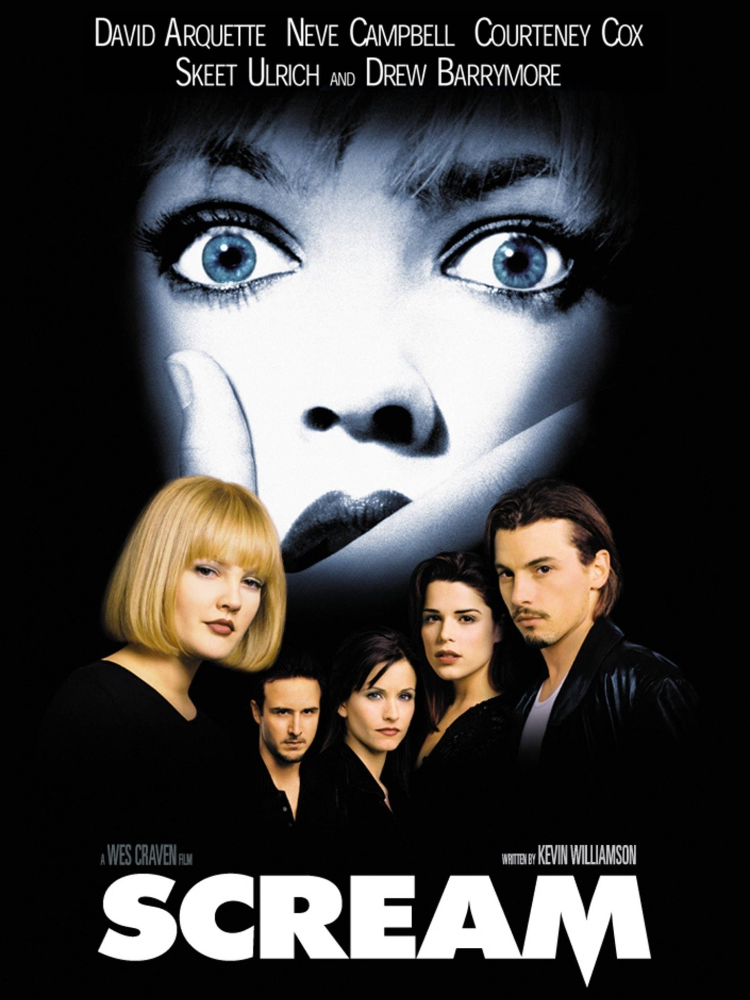

Scream (Pânico)
Ano de criação: 1996
País de origem: Estados Unidos
Diretor: Wes Craven
Descrição:
Scream é um filme de terror que conta a história de um grupo de jovens que começa a ser perseguido por um assassino misterioso conhecido como Ghostface. O criminoso utiliza ligações telefônicas e jogos psicológicos para assustar suas vítimas antes de atacar. O filme se destaca por misturar suspense, mistério e referências a outros filmes de terror, criando uma história envolvente e cheia de reviravoltas.
Quantas vezes assisti: 2 vezes
Imagem do filme:
